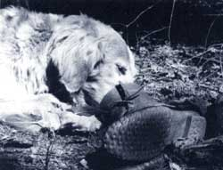
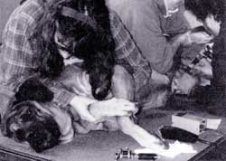

Calming thunderstruck canines, tattooing Toto, getting a new pup, and other useful tips
FOR THOSE OF YOU WHO READ MY BIO IN ISSUE # 127, you might remember that I'd been searching for the dog of my dreams. This issue, I'm happy to report that I've found him: He's Spencer; an 8-month-old, red Merle Australian Shepherd.
While some dogs just walk into our lives (literally), acquiring Spencer was a long and difficult process. But the experience of choosing a pet allows me to give those of you considering a new dog some advice.
No one would dispute the fact that almost all of us are very busy. It's great to think of giving your love to a new pet but you must also be responsible in your thinking. Constantly making sure that it is taken care of can be a difficult and worrisome endeavor. It may mean taking your new pet with you, especially if it is very young, every time you are away from home for an appreciable period of time.
For people like me, the best idea might be getting a puppy older than five months and having some preliminary training. As cute as puppies are, you might simply be too busy to give a very young dog the kind of immense patience and time it needs. In adopting a dog that was already housebroken and leash trained, I knew that two important problems were solved.
It took a few years for me to find the right time and the right dog, but I am so glad I knew when the time was right. Now, down to business!
Q: When my dog hears loud noises, like thunder or firecrackers, he just cowers on the ground and shivers. What can I do to help him put up with these noises a little better"
A: Lots of people get into what is called the "lt's OK" syndrome with their dogs when the animals are frightened. They see that their pet is scared or acting aggressively, and they bend down, pet the dog, and whisper, "It's OK, it's OK," or scoop the dog up in their arms to comfort him.
Petting a dog and speaking to it in a comforting tone is a way of rewarding it for its behavior. When people see their dog reacting to a situation with fear or aggression and then stroke it, they are telling it that this is the right reaction to have. The dog, who is not dumb, will repeat its reaction to get more praise. The owner then comforts the animal, who becomes increasingly nervous or aggressive.
It's important to try to let your pet know when it is young that loud noises are nothing to be afraid of. If it is a controllable situation (your living room during a storm, for example), try to anticipate the loud noise and make your puppy sit until the noise is out of earshot. Praise your pet lavishly after the crashing has passed, and in time it will lose its fear.
Noises like firecrackers, which are much more dramatic and disturbing to animals, are harder to deal with. Since they happen only a few times a year, on occasions that are easy to anticipate and plan for, be compassionate and allow your dog (who has much more sensitive hearing than you do!) to stay at home. If this is impossible, I have known some people who have even used rubber earplugs to some success.
The ASPCA puts out some great pamphlets on training and behavior, which they will send to you at minimal cost. One of them is called "It's Okay!" and deals expressly with this problem. The ASPCA chapter in your area can help you even more.
Q: My Rottweiler puppy, Lucy, has been tearing our walls apart to get at the Sheetrock. My house is a mess and I'm very frustrated. How can I stop her?
A: All dogs are basically wolves in canine clothing. Your little wolf cub is coming out of its den and tasting different things. She has probably tasted some trees (in the form of furniture) and animal hide (in the form of shoes), and she is finding different satisfaction in the things that she's chewing.
Sheetrock contains gypsum, a compound composed mainly of calcium, and puppies need lots of calcium as they grow. As dogs grow older, they become increasingly lactose intolerant (meaning they cannot digest milk well enough to obtain calcium from it), so proper amounts must be obtained when they are puppies. Lucy is searching out hidden deposits of calcium in the mines of your walls, as well as busying herself with scraping off the paint, drywall, and everything else she can get her teeth into.
You have two problems to solve. The first is fulfilling Lucy's dietary needs. The second is keeping her busy while you're out of the house.
Go to your butcher and buy a quantity of shank bones cut in 4" lengths. Boil the bones in a pot of water with garlic cloves for about 45 minutes. After they cool, scrape off all the meat, gristle, and marrow until they are clean. Put them in a bag and pop the bag in your freezer. Whenever you leave the house, give Lucy a fresh frozen bone. When you return home, put the bone back in the freezer (in this way it can be recycled several times). The bone will satisfy her need to chew and her need for calcium, and the cold will feel good on her gums. Garlic tastes good to dogs as well and is a natural antibiotic and flea repellent.
Make sure to discipline Lucy when you catch her pulling at the walls. Yell "No!", shake a can with some pennies in it, make her lie down, or do whatever you do to let her know that her behavior is unacceptable. And while you are plastering up the walls behind her, remind yourself that puppyhood does not last forever.
Q: I live in an apartment, and my cat never goes out.
Still, I've been told that I should get her a rabies shot. Is this absolutely necessary?
A: In some areas of the country (and this includes cities as large as New York), rabies has reached alarming proportions. Cats have superseded dogs as the most popular pet in America, and that means cat owners have a real responsibility in keeping the growth of the disease in check. Even if the chance is extremely remote that your cat could come into contact with an animal carrying rabies, the consequences are so drastic that any protection is worthwhile. It's a relatively inexpensive vaccination provided by many animal shelters. Don't think twice about it. Vaccinate.
Q: I've heard about a registry service that involves tattooing a number on a dog's abdomen. Will this really help anyone find my dog if it is lost and could you give me some more information on it?
A: Absolutely! The National Dog Registry (NDR) has been registering and tracking dogs since 1966. Each year, nearly one out of five dogs is stolen or lost. Collar tags are virtually useless as they can be lost, or ripped off your dog by thieves. NDR works with veterinarians, shelters, pounds, laboratories, dog wardens, and police across the country to locate and return dogs to their owners. These pets might otherwise be put to sleep, used for fur in gloves or coats or for animal testing or dog fighting.
NDR tattoos the inner thigh of your animal with a series of numbers (the thigh is tattooed because tissue from the ears can be easily removed). Spencer is tattooed with my Social Security number. The process is painless and can be done in shelters or by many vets and groomers. There is a onetime processing fee of $35 to register your number with NDR. Once you have registered your number, each animal will be automatically tagged for life.
NDR has a return rate of over 95%. Its hot-line number is open 24 hours a day, 365 days a year, and its system utilizes a hightech computer. It is endorsed by many organizations, such as People for the Ethical Treatment of Animals (PETA) and the American Kennel Club. I strongly urge you to register your animals. To find out the closest place you can register, call 800-NDR-DOGS.
Q: Linus, my kitten, will be turning seven months old next week. I've been told that neutering is a good idea. But what exactly are the benefits?
A: First and foremost, by altering Linus you won't be adding to the millions of animals that are put to sleep each year in the United States because shelters around the country can't find homes for them. As the bumper sticker says, "Don't Litter-Neuter"' But equally important, there are many health benefits to altering your cat. When altered, males have less chance of getting kidney stones or bladder problems, and females run a much reduced risk of getting mammarian, ovarian, and uterine cancer (they also don't go into heat, which, though it happens only twice a year, is not much fun).
Alteration is not a cruelty but a kindness. Unless your animal is of so special a breed that its genetic material is valuable, call your veterinarian and make an appointment. It's never too late (although it's best to do it before they become sexually active at six months of age), and it's really one of the nicest things you can do for your animal.
Please address pet-care questions to: Emily Miller Country Vet,C/O Mother Earth News P.O. Box 129, Arden, NC 28704.
|
 PHOTOGRAPH ? HOLLY FARMS. STYLING EUNICE CARTWRIGHT Maggie, of Greene County, NY, Satisfying her canine urge for animal hide. |
 PHOTOGRAPH COURTESY NATIONAL DOG REGISTRY Sparky undergoes a painless tattoing process that will identify him for life. |
|